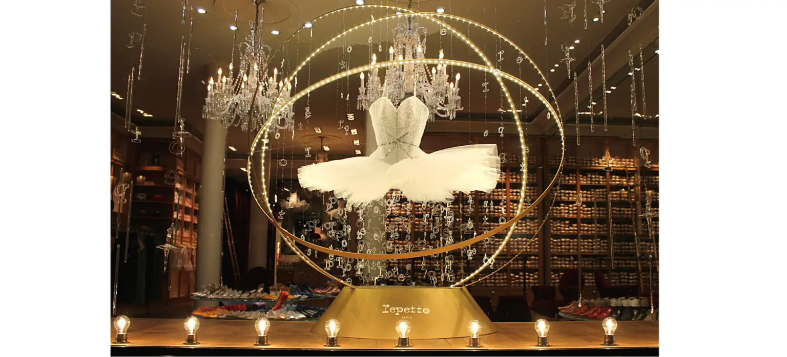
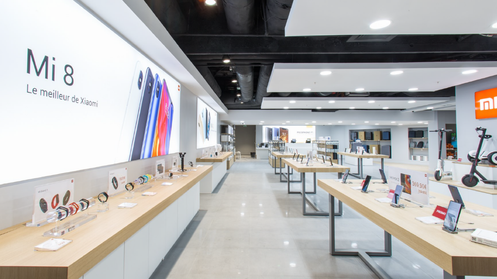
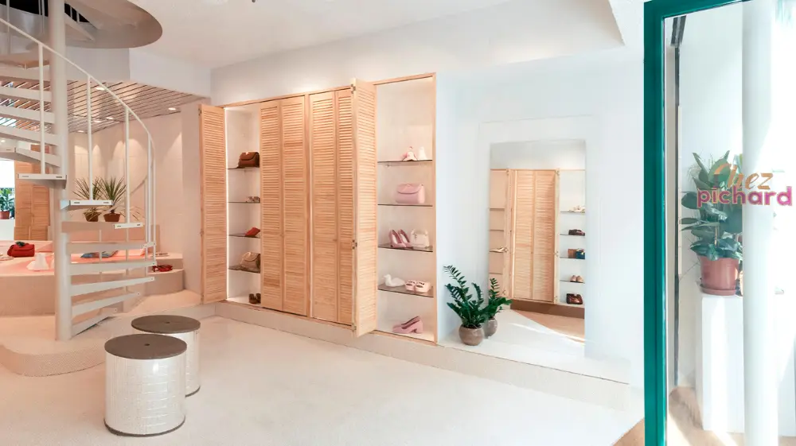
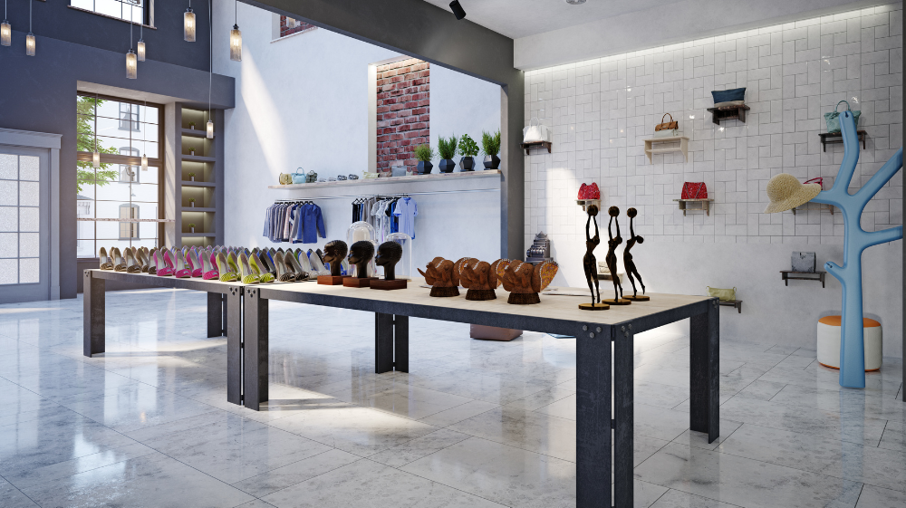
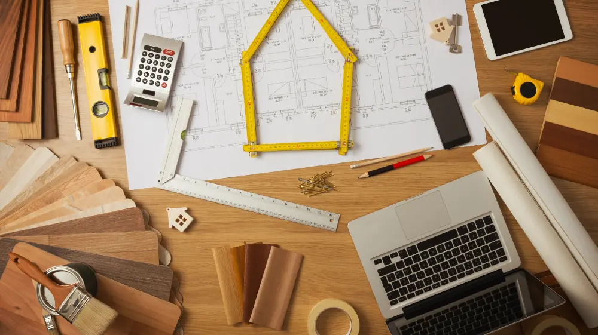

Bien-être

Agencement de magasin : 5 astuces pour bien l’aménager
Vous êtes-vous déjà demandé pourquoi vous passiez plus de temps dans un magasin plutôt qu’un autre ? La réponse est bien souvent que vous vous y sentez bien. Il est prouvé que quand un client se sent à l’aise dans un magasin, la probabilité qu’il y achète des produits est plus élevée. Un magasin bien agencé et à la décoration soignée donnera envie aux passants d’en pousser la porte ou aux clients de s’y attarder. Que ce soit pour un simple rafraîchissement ou pour une rénovation complète, entreprendre des travaux d’agencement de magasin est la clé pour élargir votre clientèle. À l’heure de la progression exponentielle de la digitalisation des modes de consommation, il est indispensable d’offrir une expérience client en magasin unique et inoubliable. Un agencement de magasin bien élaboré boostera votre rentabilité à coup sûr. Voyons ensemble les éléments à prendre en compte pour un aménagement de magasin réussi.
Agencement de magasin réussi : l’incontournable merchandising visuel
Tout d’abord, une démarche marketing bien connue de l’agencement de magasins est le merchandising visuel. Cette activité vise à optimiser l’aménagement et l’organisation visuelle des zones de vente. Ainsi, elle apporte une attention particulière à la façon dont sont présentés les produits mais aussi au bien-être et à la satisfaction client en vue de favoriser les ventes. Dans cette optique, vous devez spécialement soigner certaines zones de votre boutique.
Deuxième élément à considérer, la devanture de votre boutique. Cet élément se doit d’être irréprochable puisqu’il est le premier élément qui va attirer l’œil du passant. Les couleurs sont de mise, de même que la propreté et le design. La devanture doit faire bonne impression au premier coup d’œil. Sinon le passant n’aura pas envie de franchir le pas de la boutique.
En troisième lieu : la vitrine. Grâce à votre devanture, le passant s’approchera de votre vitrine. Il pourra alors prendre le temps d’admirer la vitrine de votre boutique et les produits que vous aurez pris soin d’y placer. Un conseil : n’économisez pas votre énergie pour faire de votre vitrine un objet de convoitise. Dynamisez-la avec des renouvellements réguliers. Faites de votre vitrine une zone qui attire le regard par un éclairage avantageux et la mise en avant de produits phares.
Dans cet esprit, nous parlerons enfin du mobilier. Le mobilier est au magasin ce que sont les vêtements pour nous. C’est ce qui l’habille et le distingue des autres magasins. Apportez un soin tout particulier au mobilier dans votre agencement de magasins. Une cohérence dans le choix des couleurs et des textures ainsi qu’un emplacement adéquat doivent permettre aux clients de les remarquer et de ressentir immédiatement l’ambiance désirée.
Optimiser l’espace et chouchouter la déco de votre magasin !
Avant tout, l’agencement de magasins recherche l’optimisation des espaces pour offrir au client un moment agréable en boutique et une présentation optimale des produits mis en vente. Prenons le cas des rangements. Pour aérer au maximum l’espace de votre point de vente, prévoyez de nombreux rangements. Le désordre est à bannir dans votre aménagement. Des placards, des tiroirs et autres niches… sont à prévoir sur toute la surface des murs, du sol jusqu’au plafond. Pour ceux-ci, on choisira de préférence des couleurs claires ou sobres.
En ce qui concerne la lumière. Celle-ci a le pouvoir d’attirer le regard. Il faut donc jouer de cet atout sans modération. Car les clients laisseront certainement de côté les produits placés dans les zones d’ombre. Il est nécessaire de laisser entrer la lumière naturelle autant que faire se peut. Mais cela ne suffira pas encore. Si bien qu’il faudra multiplier les sources d’éclairage et varier les styles de luminaires au sein de votre aménagement.
En règle générale, l’agencement de magasins doit aussi s’attacher aux couleurs et aux matériaux. Pour les couleurs, on vous invite à sélectionner des teintes claires pour leur sensation de grandeur et de luminosité. Si vous aimez les couleurs foncées, choisissez
bien les endroits où vous les apposerez et n’utilisez pas plus de trois teintes différentes. Et faites-en sorte qu’elles collent à votre charte graphique pour plus de cohérence. Pour les matériaux, on recommande du bois naturellement pâle (hêtre, bouleau, etc.). La présence de miroirs apportera une dernière touche de décoration. Ceux-ci reflètent la lumière et accentuent la sensation d’espace.
Améliorer l’expérience client grâce à l’agencement de magasin!
Il est indéniable que l’expérience client est primordiale dans l’agencement de magasins. Comme l’attention apportée à l’UX pour une application mobile, le parcours client doit être pensé dans ses moindres détails. La fluidité est le maître-mot. Ainsi, vous vous assurerez que le parcours a été élaboré pour que le client se rende dans toutes les zones de la boutique. Il faut entourer d’attention l’entrée et le début du parcours pour donner envie au client d’aller plus loin. Le chemin à suivre doit être clairement balisé et doit garantir une bonne visibilité des produits.
De toute évidence, on prendra aussi garde à constituer des zones stratégiques pour mettre l’accent sur certains produits avec des présentoirs, des vitrines, des signalétiques spéciales, etc. Au fond, au même titre que le bien-être est recherché dans un aménagement de bureau, le confort est un des critères majeurs d’un bon agencement de magasins. Des zones de détente doivent par conséquent être savamment conçues avec la mise en place de fauteuils, de bancs, etc.
Améliorer l’expérience client grâce à l’agencement de magasin!
Si le parcours client est essentiel, l’expérience sensorielle l’est tout autant. Ce concept marketing vise à instaurer une ambiance unique et distinctive dans votre boutique.
L’expérience sensorielle permet notamment d’augmenter la fidélisation et donc à terme l’achat. Le but est de faire vivre au client une expérience d’achat originale en stimulant ses sens et son imaginaire. Vous susciterez les émotions de votre clientèle en travaillant sur l’odorat (odeur d’ambiance), le toucher, l’ouïe (musique d’ambiance), parfois le goût et la vue.
L’expérience sensorielle permet notamment d’augmenter la fidélisation et donc à terme l’achat. Le but est de faire vivre au client une expérience d’achat originale en stimulant ses sens et son imaginaire. Vous susciterez les émotions de votre clientèle en travaillant sur l’odorat (odeur d’ambiance), le toucher, l’ouïe (musique d’ambiance), parfois le goût et la vue.À vrai dire, concernant ce dernier sens, on peut imaginer de nombreuses techniques d’aménagement. L’habillage linéaire par exemple et les têtes de gondoles doivent être soignées et présenter des produits à privilégier. Des présentoirs installés près de la caisse sont un autre bon moyen d’attirer particulièrement l’attention sur certaines marchandises.
Améliorer l’expérience client grâce à l’agencement de magasin!
Enfin, pour entreprendre des travaux sur votre point de vente, il vous faudra prendre en compte de nombreuses contraintes. Elles sont d’ordre technique (normes des infrastructures, électricité…) et d’ordre administratif (déclaration préalable de travaux à déposer en mairie).
En effet, si vous envisagez d’opérer un nouvel agencement de magasins, il vous faudra interrompre votre activité. Or, si toutes les contraintes n’ont pas été prises en compte dès le départ, des retards sur le chantier peuvent avoir lieu. Ces délais peuvent avoir de lourdes conséquences financières. C’est pourquoi l’on conseille de faire appel aux services d’un architecte d’intérieur. Car lui seul bénéficie d’une vue d’ensemble pour gérer l’ensemble de ces contraintes. Il sera votre interlocuteur unique de la conception à la réalisation de votre agencement de magasins.
Vous avez besoin d’être accompagné sur votre projet d’aménagement ou d’avoir plus d’informations sur le plan technique ? N’hésitez pas à prendre contact avec nous ou à télécharger notre brochure.
Ces articles pourraient vous plaire ?

Bien-être
Agencement de magasin : 5 astuces pour bien l’aménager
Vous êtes-vous déjà demandé pourquoi vous passiez plus de temps dans un magasin plutôt qu’un autre ? La réponse est bien souvent que vous vous y.....
En savoir plus
Bien-être
Home Office : On y croit encore plus qu’avant.
Télétravail, remote, home office… Il y a quelques années, la plupart d’entre nous ne connaissaient même pas ces termes. Aujourd’hui, ces néologismes.....
En savoir plus
Aménagement & Déménagement
Les étapes d’un projet d’aménagement intérieur
L’image véhiculée par les espaces de bureau d’une entreprise est fondamentale. Accueillir ses clients ou ses collaborateurs dans des bureaux.....
En savoir plus